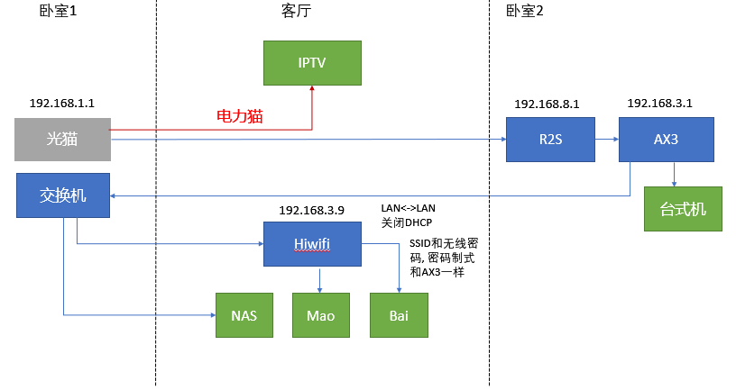

上海电信光猫下多个无线路由组网
2021-01-25
缘起
数月前入手(keng)了一台威联通的NAS，准备作为资料统一备份用。没时间也不想折腾，直接连上家里的网络就开始了备份。郁闷的是，网络的传输速度最快才能达到10M/s。就这样，忍受了很长一段时间，也备份了大概好几个TB的文件。
这次，由于疫情的原因，原定去三亚的度假计划就这么被无情的取消了。正好腾出时间优(zhe)化(teng)一下家里的网络了。
仔细梳理了一下，现在家里有3个网段，主要设备分布在家里的三个房间，见下图：

很明显，台式机访问NAS时要经过多次网络地址转换（Network Address Translation，NAT）。这应该时内网传输慢的根本原因。ps. 由于客厅只有一个网络接口，之前已经用电力猫将IPTV分离出来，给NAS一个独立网络接口。否则会更慢。
还有一些物理限制：
- 光猫在卧室1，直接连上路由的话，无线的信号会很差。加之弱电箱容量有限，无法将路由和光猫放一起。
- 各房间的有线网络从弱电箱中连出，其中只有卧室2有两个相邻有线接口。
- 客厅中的IPTV和NAS需放在一起，方便以后通过HDMI直接看NAS上的视频。
- 路由器和两台小一点的存储设备(Mao & Bai)，因为IPTV旁的地方有限，无法和NAS放在一起。只能放在客厅远离IPTV的有线网络接口附近。
现在想达到的要求是：
- 家里联网的设备都尽量连在同一个网段内。
- 物尽其用，无必要不购买新设备。
- 在原来的基础上，改动越少越好。
花开
在网上学习了一堆网络知识，终于厘清了头绪。重点是：
- 将光猫信号连接到卧室2的主路由(AX3)后，再连接回卧室2的交换机。
- AX3的性能强，将作为主路由。客厅的路由作为辅助路由。具体参考 多台无线路由能不能同名无缝切换？。重点如下：
1. 找性能最强的做主路由, 因为这一台路由会负责所有的DHCP. 预留几个IP给辅助路由器, 不要全部DHCP出去. 例如DHCP范围设成192.168.1.10~192.168.1.225. 预留192.168.1.2~9
2. 辅助的路由和主路由链好, 链接是LAN<->LAN (不是LAN<->WAN).
3. 辅助路由要关闭WAN, 关闭DHCP. 路由IP手动设成 192.168.1.X. 就是第一步预留段.
4. 辅助的路由SSID和无线密码, 密码制式全部都要一模一样. 不要一个WAP2 一个WPA的. 这样就应该可以了.
更详细的设置见路由器有线桥接的两种方式异同
修改后的网络图

担心：
- 两个路由器之间的LAN<->LAN连接中间有一个交换机，是否会出现问题？
- 外部访问的流量全部通过R2S软路由，是否稳定？是否可以作为旁路由?